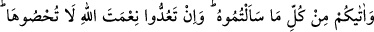
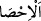

34. O size istediğiniz her şeyden verdi. Allah’ın nîmetini sayacak olsanız
sayamazsınız. Doğrusu insan çok zalim, çok nankördür.
“O size istediğiniz her şeyden verdi.” yâni istediklerinizden maslahatınıza uygun
olanları verdi. Allah O’ndan istediğiniz her şeyden bir kısmını vermiştir. Çünkü her
sınıftan mevcûd olanlar, Allah’ın takdir ettiği şeylerin bir kısmıdır. Bu, tıpkı: “Her kim
bu çarçabuk geçen dünyâyı dilerse ona dilediğimiz kadarını dünyâda hemen
veririz.” (el-İsrâ, 17/18) âyetine benzer. Buna göre âyetteki “min” harfi teb‘îzıyyedir.
“Min” harfi beyâniyye olursa o zaman mânâ: ‘İstediklerinizin tamamını verdi’ olur.
“Küll (tamamı)” kelimesi çokluk ifâde eder. ‘Tıpkı falanca her şeyi bilir.’ ‘Herkes ona
geldi.’ ifâdelerinde olduğu gibi “Onlara her şeyin kapısını açtık.” âyeti de (En’am,
6/44) bu mânâdadır.
Kâşifî şöyle der: “Size isteğiniz her şeyden verdi. Yâni muhtaç olduğunuz istenmiş
veya istenmemiş her şeyi bol bol verdi.”
İstemenize karşılık olarak ya da başka bir sebeple “Allah’ın nîmetini” size ihsan
ettiği nîmetleri “sayacak olsanız sayamazsınız.” tam ve kesin bir şekilde saymaya
gücünüz yetmez. Çok sayıda ve nâmütenâhî olması hasebiyle bunları özet olarak bile
sayamazsınız.
“__WORD__el-İhsâ (saymak)” kelimesinin aslı, hesap/sayım belirli bir onluğa geldiği
zaman onu muhâfaza etmek için bir çakıl taşı (husât) konmasından ve sonra tekrar
saymaya başlanması şeklindeki uygulamadan alınmıştır. Buna göre mânâ şöyledir:
Nîmetler için herhangi bir son bulanamaz ki orasını belirlemek için bir çakıl taşı
konulabilsin.
İki tür nîmet vardır:
1- Beden sağlığı, güven ve âfiyet; yiyecek, içecek, giyecek, evlenme, mal ve evladdan
lezzet alma gibi faydaları elde etme nîmeti,
2- Hastalık, sıkıntı, fakirlik ve belâ gibi zararlı şeylerin bertaraf edilmesi nîmeti.
En büyük nîmet ise düzgün bir yaratılışa sâhip olmak ve ma‘rifetin ilhâm edilmesidir.
Sülemî (k.s.) şöyle buyurmuştur: “Bu nîmetten maksad bizim peygamberimiz
(s.a.)’dir. O Hak ile halk arasında büyük bir elçi ve yakın bir vâsıtadır. Aslında O’nun
kemal sıfatlarının hasrı ve cemâl nurlarının şerhi tasavvur ve tahayyül dâiresinin
dışındadır, teemmül ve tefekkür ölçüsüne sığmaz.”
Yüceliklerin zirvesinde olan senin yüksek kadrine
Ne akıl yol bulur ne de idrâk erişir